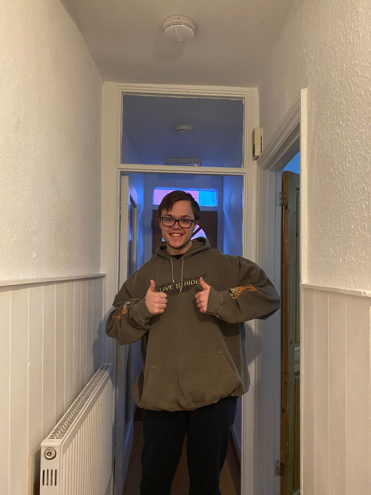

Calculator

Brick-Breaker
.png)
Punk-API
.png)
Java Snap-Game
.png)
Hi, I'm Luke a Junior software developer based in London

Hi my name is Luke Mathers and I am an aspiring software developer. I am from London and my love of computing started from an early age from playing video games with my late father. I have always been a curious person who is very observant so naturally i wanted to know how the world works and so i pushed my interests by taking all three sciences and Math at A level.
Following this my love for both space and computing grew. I went on to study Astrophysics at the University of Sussex where i was introduced to coding on a higher level by using python to help solve complicated differential equations and aswell as monte carlo simulations
At this point i realised my passion and my comfort of gaming were in very similar areas so naturally it was the next step for my career progression.
Whilst learning to code i discovered the joy of starting from a basic concept to a fully functioning product whether that be games or services. I began to realise ways to make this simpler and that building each component concurrently although slightly more complicated at first, leads to an easier experience overall. Whether this be simple designs or more complicated measures such as security / functionality, it is much better to incorporate it all at the beginning than trying to slot it in to an already complex project.
I think my goal one day is to be part of a good coding team big or small that can really help make a difference.
As part of the course I completed a range of projects including...
Final Client Project Delivery
A real-life MVP for a development project, delivered
as a Scrum team to a client who will use it for future
development. It will include a React front-end and Spring back-end integration, including authentication and CI deployment to GCP.
Spring Boot Project
A properly architected and documented API following all modern design patterns, built using Spring and deployed using GCP.
Java Project
A Java Object Oriented application making use of multiple models and classes to run complex game logic from the command line.
React API Project
A React application that pulls data from an external public API and presents it in a dashboard or multipage layout.
JavaScript Game Project
A browser-based game using modern JavaScript
programming techniques and DOM manipulation.
HTML/ CSS Portfolio Website
Built using correct version control and modern coding
standards, and deployed live using a CI pipeline.
Learning a wide range of technical skills such as HTML, CSS and BEM. With more to come such as React and JavaScript
Growing up I've always been an inquisitive person, pestering everyone and anyone with questions about the world because i was eager to learn. This made me fall in love science due to the variety of knowledge. Eventually leading to my degree with helped me specialise my knowledge further and taught me some valuble life lessons both about myself and the world around me.
Working in a bar was invaluble to gaining real life experience. This was alongside my studies so i had to learn to adapt and to perform to my best in many areas of life. This role really made think about communication and the different levels to it; from discussing work to a manager to trying to effectively communicate with customers despite there being limiting factors such the noise and their intoxication. I beleieve this skill will help explain my code / projects to people well-versed in the field as well as people who have no coding background.
As previously mentioned, gaming was and still is one of my fondest memories i have with my father before he passed. I felt it gave us a chance to 'muck around' in these fantasy worlds and to this day when gaming i think about whether he would've enjoyed the game.
Gaming became my escape when life got stressful and for that i'm ever greatful to all these talented coders whom i aspire to be like. Even to this day i still use gaming as a way to 'hang out' with friends across the world in the US and NZ despite the timezones
For someone who is very into his science and maths etc... it does seems abit weird to say but i am sports obsessed. I have been following my childhood football club since i can remeber and go to games whenever i can. If it's on, i am normally watching sport from football, rugby and hockey to even having a soft spot for curling.
I also try and get out to play sporty things whenever i can however that stopped when the pandemic took over so i'm still on the lookout to rejoin clubs etc
Have you ever been asked "what do you do for fun??" and then suddenly your mind goes blank. Well here you go. I like baking because i love food and have a massive sweet tooth. Whether is following the recipe to make dirty brownies or going freestyle and making tasty gloop i've done pretty much all of it. It's a nice way to destress but i dont like the clean up :)